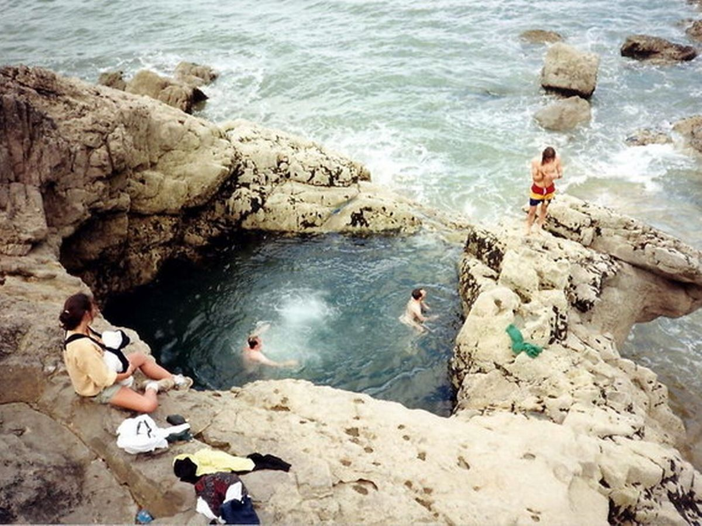
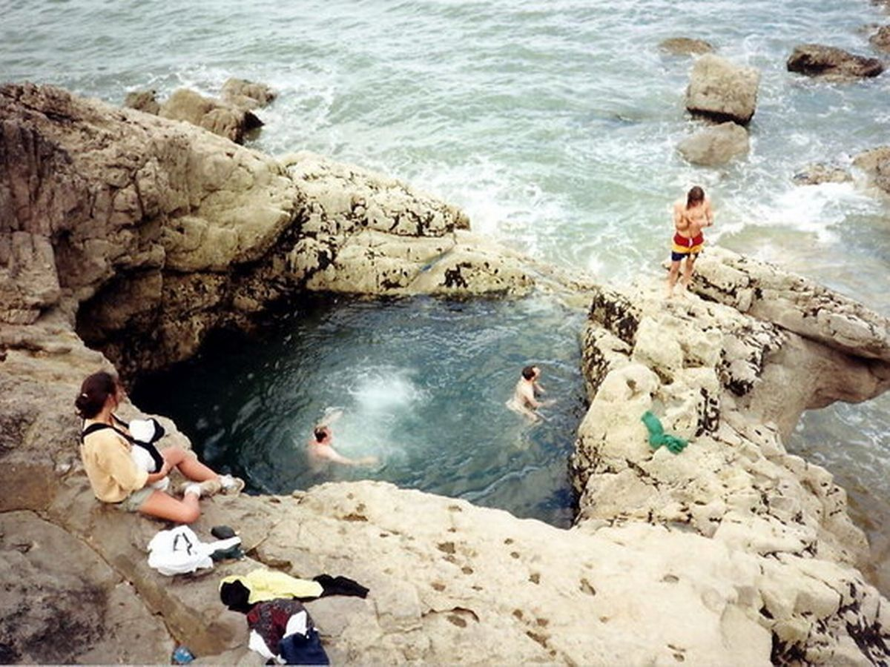

About
Rhossili Bay is the first beach to be awarded Britain’s Best Beach by TripAdvisor’s Travellers’ Choice for the second year running, not to mention the 3rd best beach in Europe and 9th best in the world! Rhossili has also been described as ‘The supermodel of British beaches’ by The Independent and has also won accolades from UK Travel Writers and awards for being the best spot to have a picnic! And The Times nominated Rhossili as ‘The UK's No.1 dog-friendly beach’. The main focus of this 7-day holiday is to:
Relaxing on the beach - all neccesities included!
Enjoying drinks with the locals
Getting to know the local culture and history
If this does not get your mind relaxed - then what could!
Are you ready?


 
